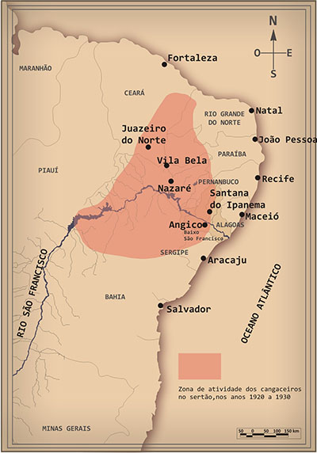

O cangaço foi um fenômeno complexo que se originou em um contexto de profunda desigualdade social e
econômica no nordeste do Brasil. Na virada do século XIX para o XX, a ttgião enfrentava uma série de
desafios, incluindo secas periódicas que assolavam o sertão, condições de trabalho extremamente
precárias para a população rural e um sistema político dominado pelo coronelismo.

Os cangaceiros eram, em sua maioria, homens e mulheres marginalizados pela sociedade, muitos dos
quais fugiam da pobreza e da injustiça social. Eles se organizavam em bandos liderados por chefes
carismáticos, como Virgulino Ferreira da Silva, mais conhecido como Lampião, e seu companheiro
Maria Bonita. Esses líderes muitas vezes adotavam um estilo de vida nômade, percorrendo o sertão,
buscando sustento através de pilhagens, extorsões e confrontos com autoridades locais.
Lampeão e Maria Bonita ficaram juntos até
o dia de suas mortes
O cangaço também foi marcado por uma cultura própria, com códigos de honra e valores peculiares.
Os cangaceiros desenvolveram um forte senso de solidariedade dentro de seus grupos, além de uma
habilidade extraordinária em sobreviver em um ambiente hostil. Suas histórias se tornaram lendárias,
inspirando admiração e medo ao mesmo tempo.
O fenômeno do cangaço atingiu seu auge nas primeiras décadas do século XX, mas foi gradualmente
enfraquecendo à medida que o Estado brasileiro fortalecia suas instituições e expandia sua presença
no interior do país. A morte de Lampião e de outros líderes cangaceiros em emboscadas policiais
marcou o fim de uma era, mas o legado do cangaço perdura até hoje, tanto na memória popular quanto
na cultura nordestina.